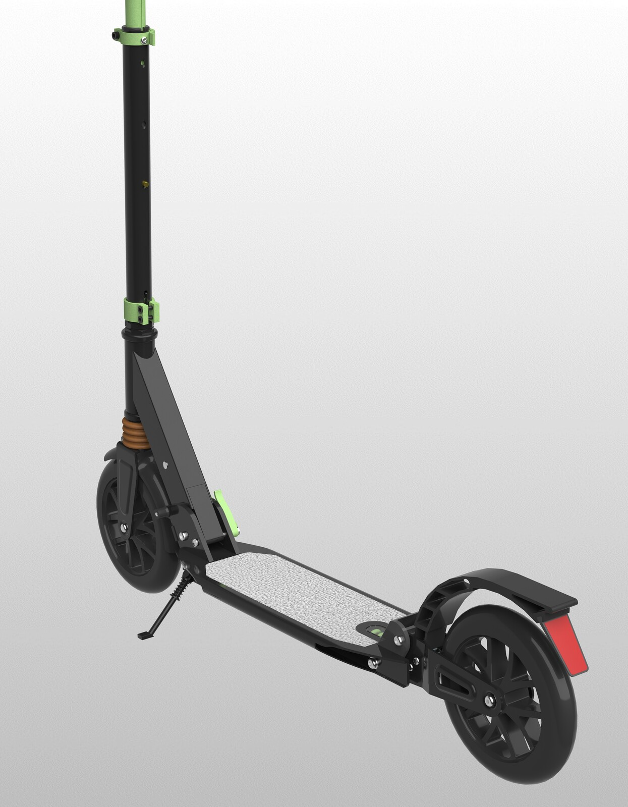
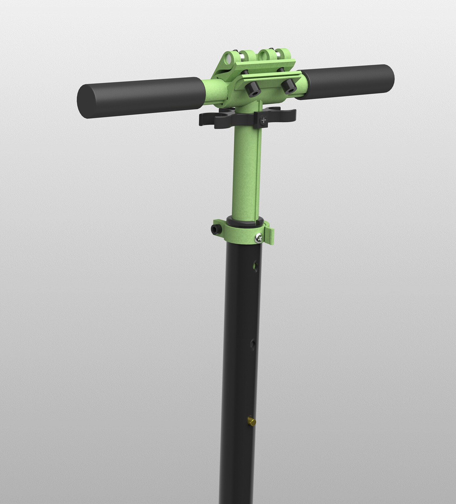
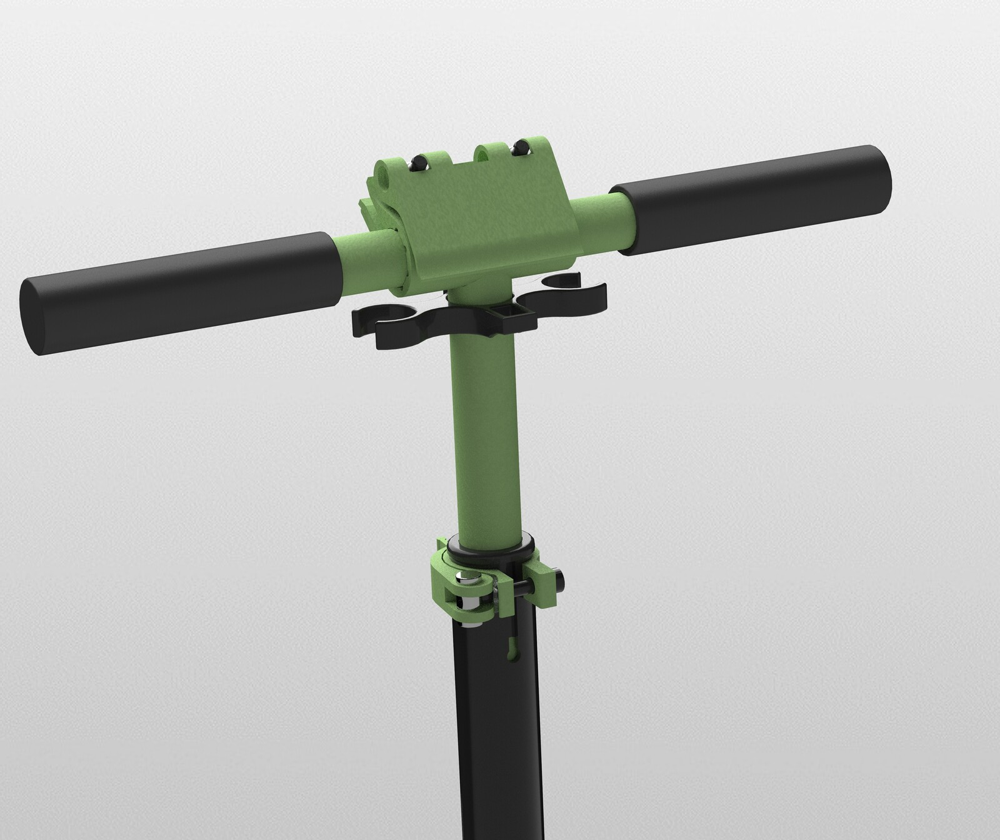
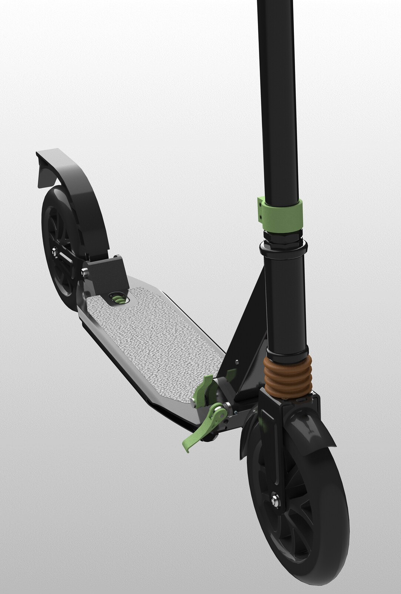
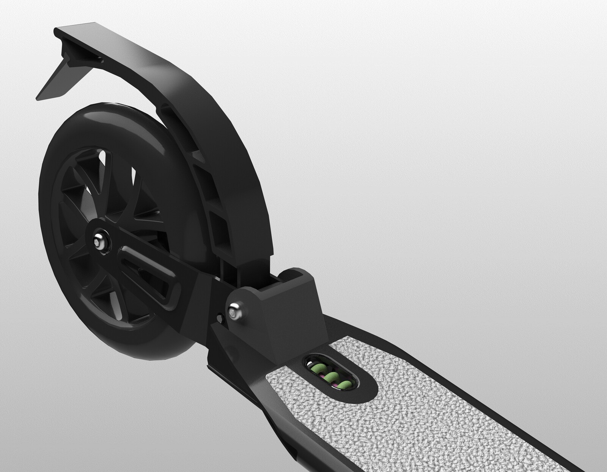
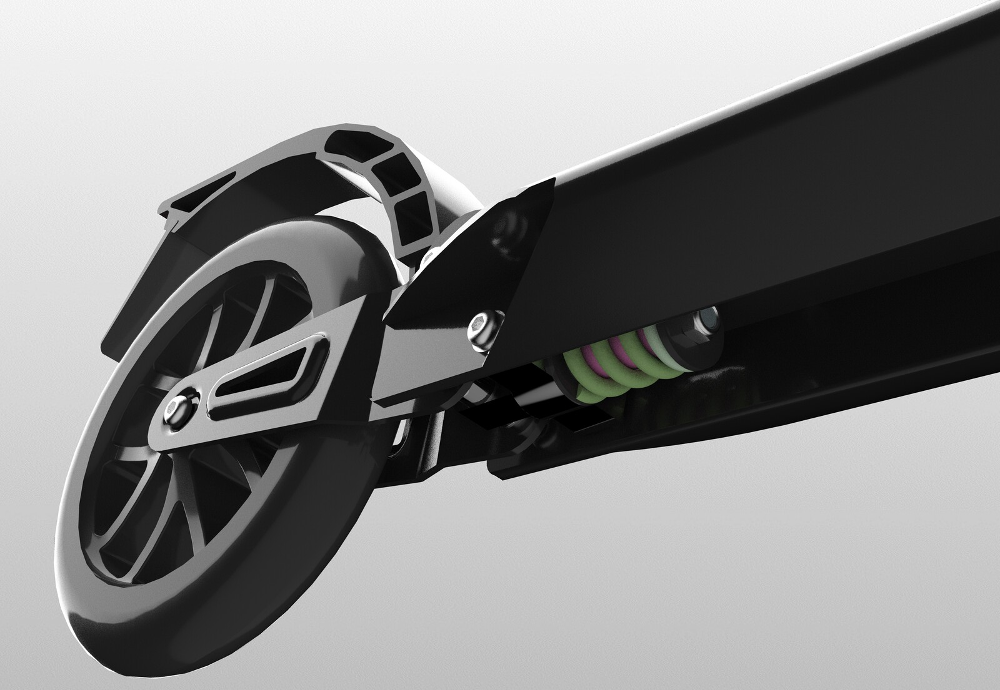

Reverse engineering, also called back engineering, is the process by which a man-made object is deconstructed to reveal its designs, architecture, code or to extract knowledge from the object.





